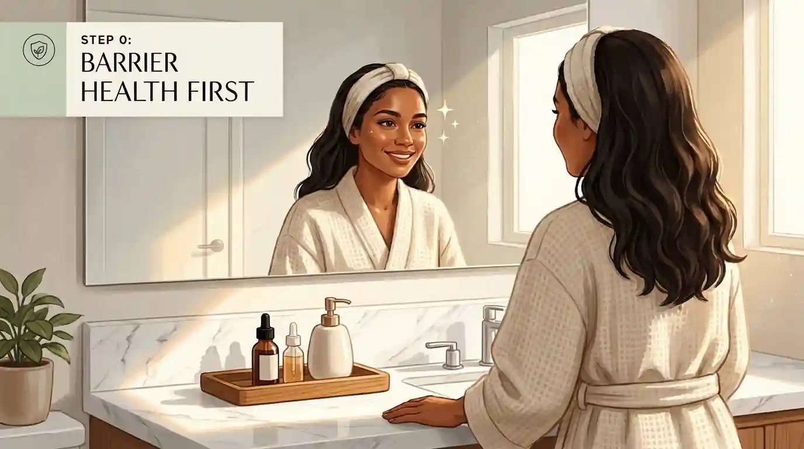
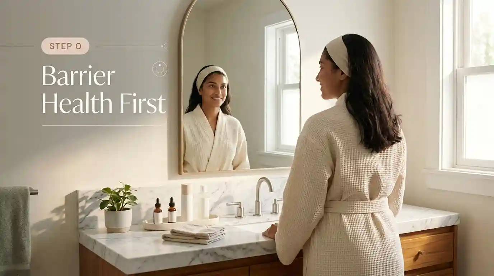
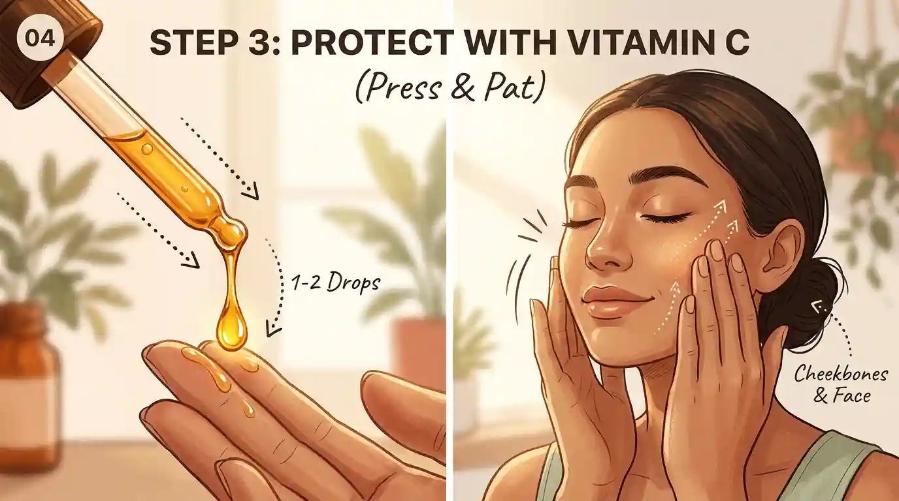
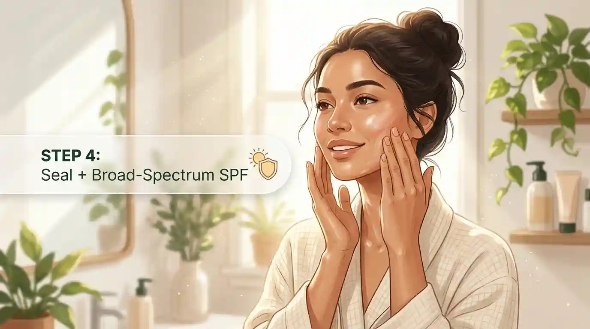

The most important step is also the least glamorous. Consistency matters more than novelty. A gentle cleanser, a moisturiser suited to your skin, and a broad-spectrum sunscreen can do more for long-term skin health than a rotating collection of aggressive treatments. The routine below adds optional hydration and antioxidant steps without treating them as necessities.

Step 0: Barrier Health First consistency and a calm barrier matter more than any single product.
The most important step is also the least glamorous: consistency. A gentle cleanser, a moisturiser suited to your skin, and broad-spectrum sunscreen do more for long-term skin health than a rotating collection of aggressive treatments. This routine adds optional hydration and antioxidant steps without treating them as necessities.
Step 1: Gentle Low-pH Cleanse start with lukewarm water and gentle fingertips.
Start with lukewarm water. If your skin feels comfortable when you wake up and you did not sweat heavily overnight, a water rinse may be enough, especially if you have dry or sensitive skin. If you are oily, used an occlusive product overnight, or wake up sweaty, use a mild facial cleanser.
Look for a cleanser that is gentle, non-abrasive, and free of drying alcohol. Wet your face, apply the cleanser with your fingertips, and rinse with lukewarm water. Do not scrub with a washcloth, brush, or textured sponge. Friction can leave skin red and irritated even when the cleanser itself is well tolerated. The American Academy of Dermatology recommends limiting face washing to twice a day and after heavy sweating.
Your skin should feel clean, not squeaky. Tightness, stinging, or a persistent dry feeling after cleansing is a sign to reduce the cleanser's strength or frequency. "More oil removed" does not automatically mean healthier skin. A cleanser that repeatedly strips the surface can make a routine harder to tolerate.
Step 2: Hydrate on Damp Skin pat skin slightly damp before applying hydration.
After rinsing, pat your face so it remains slightly damp rather than completely dry. If you like a hydrating toner or essence, this is the point to use it. Choose a simple, fragrance-free formula if your skin is reactive. Ingredients such as glycerin, hyaluronic acid, or panthenol may help a product attract or hold water at the surface, but the product is optional.

Pressing hydration into damp skin helps trap moisture at the surface.
A hydrating layer is not a substitute for moisturiser. Its main role is comfort and temporary surface hydration. The more important habit is applying moisturiser while the skin is still slightly damp. Dermatologists recommend this approach because moisturiser helps trap water in the skin, and damp skin makes creams and ointments easier to spread.
If a toner makes your face sting, feels sticky, or causes pilling, remove it from the routine. A short routine that you can use comfortably every day is better than an elaborate one that repeatedly irritates you.

Step 3: Protect with Vitamin C (Press & Pat) dispense 12 drops and press into the skin.
Vitamin C serum is a popular morning add-on because vitamin C can act as an antioxidant. In appropriately formulated topical products, it may help protect against photoageing and some effects of ultraviolet-related oxidative stress. That does not make it a replacement for sunscreen, and it does not mean every vitamin C serum will perform equally well.
Press and pat 12 drops of vitamin C serum over cheeks, forehead, and face.
Many topical vitamin C products are unstable, insufficiently absorbed, or supported by limited testing. Stable formulation matters. Products containing L-ascorbic acid can degrade when exposed to oxygen, light, or heat, so follow the manufacturer's storage instructions and replace a product if its colour or smell changes significantly.
Apply a small amount after cleansing and before moisturiser and sunscreen. Pressing or lightly smoothing the serum over the skin is enough; vigorous rubbing is unnecessary. Allow each layer a moment to settle if products tend to pill. If you have sensitive skin, begin every other morning and stop if you develop persistent burning, redness, or a rash.
You can also skip vitamin C entirely. There is no requirement to use an antioxidant serum to have healthy skin. People who are pregnant, treating a skin condition, or using prescription products should ask a clinician or pharmacist about the complete combination of products they plan to use.

Step 4: Seal + Broad-Spectrum SPF moisturise then finish with sunscreen.
Choose the lightest moisturiser that prevents tightness through the day. Gel or lotion textures may feel more comfortable on oily skin. Creams may be more useful for dry skin, while a fragrance-free cream or ointment is often a better choice when the skin barrier is irritated or very dry. If you are acne-prone, look for "non-comedogenic" labelling, but remember that no label guarantees a product will suit every person.
Apply moisturiser after any watery products and before sunscreen. Use enough to cover the face and extend it down the neck if the neck is not covered by clothing. You do not need to massage forcefully. A light, even application reduces friction and makes it easier to apply sunscreen on top.
Some sunscreens are moisturising enough that people with oily or combination skin can skip a separate morning moisturiser. Others may need both layers, particularly in dry weather or when using drying acne treatments. Adjust the routine according to how your skin feels rather than following a fixed number of products.
Sunscreen is the protective step that should not be treated as optional when you will be exposed to daylight. Choose a product labelled broad spectrum and SPF 30 or higher. Broad-spectrum protection covers both UVA and UVB rays. If you will swim or sweat, choose a water-resistant product and follow its reapplication instructions.
Apply sunscreen as the final skincare step, before makeup. Cover the face, ears, neck, and other exposed areas. Use a generous amount rather than spreading a very thin film over a large area. The AAD advises applying sunscreen before going outdoors and reapplying every two hours while outdoors, as well as after swimming or sweating.
Tinted sunscreen containing iron oxides may be useful for people concerned about dark marks, because those formulas can also reduce exposure to some visible light. The key point is still adequate, consistent application. No antioxidant serum, moisturiser, or makeup product can compensate for using too little sunscreen.
Sunscreen is not only an anti-ageing product. It helps reduce sunburn risk and protects against ultraviolet damage associated with skin cancer and premature skin ageing. Shade, protective clothing, and a hat add useful protection when you are outside for extended periods.
Not always. If your skin feels comfortable when you wake up and you did not sweat overnight, a lukewarm water rinse may be enough, especially for dry or sensitive skin. Use a gentle cleanser if you are oily, used an occlusive product overnight, or woke up sweaty.
No. Vitamin C is an optional antioxidant add-on, not a requirement for healthy skin. It never replaces sunscreen. If you use it, apply a small amount after cleansing and before moisturiser and sunscreen.
Broad-spectrum sunscreen SPF 30 or higher. It protects against UVA and UVB rays, sunburn, premature ageing, and ultraviolet damage linked to skin cancer. It should be the final skincare step before makeup.